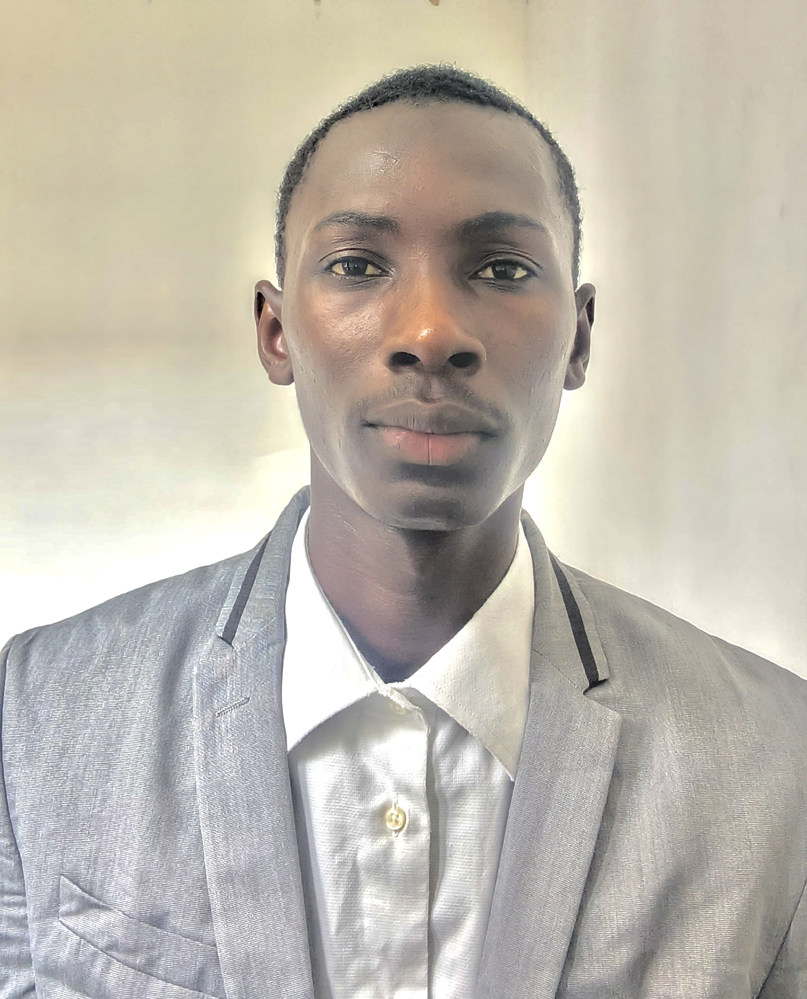

Bonjour, je suis
Étudiant ingénieur en Télécommunications et Réseaux, préparant la dernière année de cycle ingénieur (Bac+5) à partir de septembre 2026
Actuellement en fin de 2ème année de cycle ingénieur (Bac+4 équivalent Master 1) à l'Institut Galilée - Université Sorbonne Paris Nord (USPN), je développe un fort intérêt pour l'Intelligence Artificielle et l'analyse de données appliquées aux systèmes informatiques et réseaux.
Mon parcours m'a permis d'acquérir une solide expertise en développement informatique, en télécommunications, en traitement du signal et des données, ainsi qu'en technologies réseaux. J'ai travaillé sur des projets innovants, notamment le traitement d'images médicales par Deep Learning dans le cadre d'un stage, ainsi que le développement d'une plateforme touristique et le développement d'un chatbot qui parle la langue wolof (langue parlée au Sénégal) au sein d'une start-up, où j'occupe actuellement le poste de chargé de communication et de gestion de projet.
Télécommunications et Réseaux
Institut Galilée - Université Sorbonne Paris Nord (USPN) - Villetaneuse (France)Informatique, Télécoms et Réseaux
Ecole Supérieure Polytechnique (ESP) - UCAD - Dakar (Sénégal)Diplôme Universitaire de Technologie
Ecole Supérieure Polytechnique (ESP) - UCAD - Dakar (Sénégal)Série S - Mathématiques, Sciences Physiques et Sciences de la Vie et de la Terre
Lycée Touba Toul - Thiès (Sénégal)Amélioration de la qualité d'images médicales à faible dose de rayons X via des modèles de deep learning de débruitage.
Start-up étudiante d'ingénieurs développant des solutions numériques innovantes pour le Sénégal (tourisme, IA, IoT, data).
Projets réalisés :
• Senegal-Rek : plateforme numérique pour le tourisme au Sénégal
• Tonetouma-Bot : chatbot en langue wolof
• Ndox-Mi : système IoT de suivi de niveau d'eau et facturation
intelligente
Conception et déploiement d'un système de diffusion publicitaire automatisé basé sur la VoIP (Asterisk / IVR).
Conception et programmation de robots autonomes pour la Coupe de France de Robotique 2025 (Robot-Rock-Tour). Missions de nos robots: : construction de gradins, déploiement de banderole, interaction avec les PAMIs, faire du show sur la scène, rangement d'éléments de jeu, et retour en zone d'arrivée à la fin du spectacle
N'hésitez pas à me contacter pour discuter d'opportunités ou de collaborations !